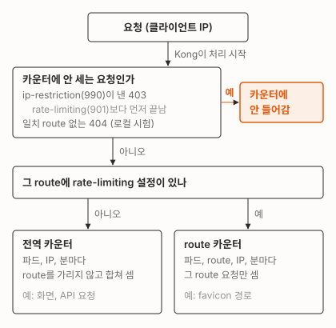

Kong 게이트웨이에 IP 하나가 1분에 보낼 수 있는 요청 수의 기본 한도를 걸면서, 값은 접근 로그에서 센 IP별 분당 최대 요청 수로 정했어요. 그런데 로그의 최대 2,997은 Kong이 한도를 셀 때 넣지 않는 403 응답이 만든 값이었고, 그다음 큰 값은 favicon 하나를 계속 다시 받는 사용자였어요. 그 403을 빼고 favicon은 따로 세게 한 뒤 기본 한도를 Kong 파드마다 IP당 분당 3,000으로 걸었고, 로그인 같은 경로에 따로 걸었던 낮은 한도는 문자와 메일을 보내는 경로에만 남겼어요.
Kong은 한도를 넘었는지 보려고 요청 수를 세는데, 이 글에서는 그 값을 카운터라고 불러요. route는 Kong이 호스트와 경로로 요청을 고르는 규칙이고, PRIORITY는 Kong 플러그인의 실행 순서 숫자예요. ip-restriction은 허용 목록에 없는 IP를 403으로 막는 플러그인이에요. 요청 하나가 어느 카운터에 들어가는지는 아래 순서로 정해져요.

문제
호출 제한은 한 서비스의 Ingress 몇 개에만 붙어 있었어요. 나머지 경로는 IP 하나가 1분에 수천 번을 보내도 그대로 통과했어요. 다른 서비스의 로그인 경로와 문자 인증번호를 보내는 경로도 마찬가지였어요.
할 일은 모든 경로에 적용되는 플러그인 하나를 거는 것이었어요. 어려운 건 값이었어요. 너무 낮으면 정상 사용자가 429를 받고, 너무 높으면 걸어 둔 의미가 없어요.
전제 조건
아래 조건이 같으면 이 글의 방법을 그대로 쓸 수 있어요.
- Kong 2.5.1과 DB-less 모드: DB-less는 Kong이 설정을 데이터베이스 없이 받는 모드예요. Kong Ingress Controller 1.3이 쿠버네티스의 Ingress와 플러그인 객체를 읽어 Kong 설정으로 바꿔 넣어요.
- policy local: rate-limiting 플러그인이 카운터를 어디에 둘지 정하는 설정이에요. Kong이 쓸 Redis가 없어서 각 Kong 파드가 자기 메모리에 따로 세요. prod Kong 파드가 3개라, 한 IP의 연결이 세 파드에 나뉘어 붙으면 실제로 통과하는 양은 설정값의 3배까지 가요.
- 실제 클라이언트 IP: 로드밸런서가 PROXY protocol로 원래 접속 IP를 Kong에 넘겨줘요. 그래서 접근 로그 첫 칸의 IP가 곧 카운터를 가르는 기준이에요. 모든 요청이 로드밸런서 IP 하나로 보이는 환경이면 IP별 제한부터 성립하지 않아요.
설계 1: 전역 플러그인으로 기본 한도 걸기
새 Ingress가 제한 없이 열리는 일을 막으려고 전역 플러그인을 택했어요. global: "true" 라벨을 단 KongClusterPlugin 하나를 Kong 배포 설정에 함께 두면, 앞으로 만들 Ingress도 처음부터 이 한도 안에 들어와요.
- apiVersion: configuration.konghq.com/v1
kind: KongClusterPlugin
metadata:
name: default-rate-limit
annotations:
kubernetes.io/ingress.class: <이 Kong 의 IngressClass>
labels:
global: "true"
plugin: rate-limiting
config:
minute: 3000
limit_by: ip
policy: local
fault_tolerant: true
hide_client_headers: falseKong Ingress Controller는 Ingress의 경로 하나를 route 하나로 만들어요. 같은 플러그인 설정이 여러 단계에 있으면 Kong 2.5.1은 가장 구체적인 하나만 써요.
- route 설정: 가장 먼저 이겨요.
- service 설정: 요청을 넘겨받을 백엔드 단위 설정이에요. 이 글에서는 쓰지 않았어요.
- 전역 설정: 위 둘이 없을 때 써요. 카운터에 route 구분이 없어서, IP 하나가 보낸 요청은 호스트가 달라도 한 카운터에 쌓여요.
버린 대안은 Ingress마다 rate-limiting을 붙이는 방식이에요. route마다 카운터가 따로 생겨서, 여러 경로를 부르는 IP일수록 통과하는 양이 오히려 커져요. 새 Ingress에 붙이는 걸 빠뜨리면 그 경로는 제한 없이 열린 채로 남아요. 그래서 기본 한도는 전역으로 걸고, 따로 다뤄야 하는 경로에만 route 설정을 붙였어요.
되돌릴 때는 배포 설정에서 이 객체를 빼고 다시 반영하면 돼요. 켤 때 Kong 파드는 재시작하지 않았어요.
설계 2: 카운터 단위로 최대 요청 수 세기
한도 값의 근거는 접근 로그에서 센 IP별 분당 최대 요청 수예요. 카운터가 Kong 파드마다, 시계의 분 단위로 돌아서 로그도 Kong 파드와 IP, 분이 같은 요청끼리 묶어 셌어요. 로그는 Loki(로그 저장소)에 쌓인 prod 접근 로그 26일 치를 썼어요.
sum by (host, ip) (count_over_time({namespace="<네임스페이스>", container="proxy", pod="<파드>"} |= " host=" | pattern "<ip> - <_> host=<host>" [1m]))
질의는 호스트별로 받았어요. 받은 값은 Kong 파드와 IP, 분이 같은 것끼리 다시 더했어요. 전역 카운터가 호스트를 가리지 않고 합쳐 세기 때문이에요.
Loki의 max_query_series: 500이 중간 집계에도 걸렸어요. IP가 많은 구간에서는 질의가 통째로 거절돼요. 그래서 Kong 파드별로 나눠 30분 구간씩 물었어요. 한도에 걸리면 구간을 반으로 줄였어요.
| 범위 | p50 | p99 | p99.9 | 최대 |
|---|---|---|---|---|
| IP 하나의 분당 요청, Kong 파드별 | 2 | 98 | 307 | 2,997 |
p99.9는 1,000개 중 999개가 이 값 이하라는 뜻이에요. 이때는 아직 기본 한도가 없어서, 최대 2,997은 한도에 막힌 값이 아니에요. p99.9까지는 수백 건이었는데 최대만 3,000에 가까웠어요. 이 최대를 그대로 믿으면 안 됐어요.
설계 3: 카운터에 안 들어가는 요청 가려내기
접근 로그에는 rate-limiting까지 오지 않은 요청도 찍혀요. Kong 플러그인에는 PRIORITY라는 실행 순서 숫자가 있고, 숫자가 큰 플러그인이 먼저 돌아요. 허용 목록에 없는 IP를 403으로 막는 ip-restriction은 990, rate-limiting은 901이에요. 그래서 ip-restriction이 403으로 끝낸 요청은 rate-limiting을 지나지 않아요.
운영과 같은 2.5.1 버전의 공식 Kong 이미지를 DB-less로 띄우고, 기본 한도를 분당 3으로 걸어 확인했어요.
- 403: IP 제한 route로 5번 보내 403을 받은 뒤, 다른 route로 보낸 요청은 200이었어요. 403은 카운터에 들어가지 않았어요.
- 일치하는 route가 없는 404: 같은 식으로 5번 보낸 뒤에도 다음 요청은 200이었어요.
- 전역 카운터: 서로 다른 route 두 곳에 보낸 요청이 합쳐져서 네 번째 요청이 429였어요.
- route 단위 설정: 전역 카운터가 다 찬 뒤에도 자기 한도를 가진 route는 200을 냈어요.
최대 2,997은 ArgoCD(쿠버네티스 배포 도구) 화면에서 나왔어요. IP 허용 목록에 없는 곳에서 열린 화면이 실시간 갱신 연결을 7,380번 다시 맺었고, 모두 403이었어요. 처음에는 이 값을 근거로 ArgoCD route에 분당 20,000짜리 예외를 주려고, dev에 먼저 붙여 봤어요. 403이 카운터에 들어가지 않는다는 걸 확인하고 dev 예외도 지웠고, prod에는 넣지 않았어요. 표본으로 본 기간에 허용된 IP의 ArgoCD 사용은 분당 최대 206이었어요.
이 집계는 상태 코드를 가리지 않고 모든 줄을 셌어요. 그래서 실제 카운터 값은 위 표보다 작거나 같아요.
설계 4: 반복 요청을 따로 세기
ArgoCD의 403을 빼고 나니 최대는 2,285였어요. 강의 소개 사이트에서 정적 파일을 받은 IP였고, 그 분의 요청은 API 3건을 빼면 모두 정적 파일이었어요. 비슷하게 요청이 많았던 IP들도 요청 대부분이 /img/favicon.png 한 파일이었어요.
요청이 많았던 IP들을 순위대로 놓고, 순위가 고르게 퍼지도록 5곳을 골라 접근 로그 줄을 봤어요.
- User-Agent: 표본에서 받은 접근 로그 줄은 모두 Instagram 안드로이드 인앱 브라우저였어요. 인앱 브라우저는 앱 안에서 열리는 웹 화면이에요.
- 함께 받은 요청: 표본 IP들이 favicon 말고도 강의 페이지와 화면 파일을 받아서, 봇이 아니라 실제 사용자로 봤어요.
- 반복 이유: 왜 favicon을 계속 다시 받는지는 확인하지 못했어요.
전역 카운터에서는 이 반복이 그 사용자가 화면을 열고 API를 부르는 요청과 함께 쌓여요. 관측한 최대 2,285는 3,000 아래였지만, 여유는 700번 남짓이었어요. 반복이 한도에 닿으면 그 사용자의 화면과 API 요청도 429를 받아요.
그래서 미리 favicon 경로만 받는 Ingress를 하나 더 만들고 rate-limiting을 따로 붙였어요. 같은 호스트에서 경로가 더 길어 이 Ingress가 먼저 매칭되고, route 설정이 전역보다 이기니 favicon 요청은 자기 카운터만 써요. 정상 화면은 favicon을 몇 번만 받아서 처음에는 분당 60으로 걸었어요. 아래는 나중에 올린 지금 값이에요.
apiVersion: configuration.konghq.com/v1
kind: KongPlugin
metadata:
name: <사이트>-favicon-rate-limit
config:
# (주석 생략)
minute: 3000
limit_by: ip
policy: local
fault_tolerant: true
hide_client_headers: false
plugin: rate-limiting
---
apiVersion: networking.k8s.io/v1
kind: Ingress
metadata:
name: <사이트>-favicon
annotations:
# (주석 생략)
konghq.com/plugins: https-redirect,<사이트>-favicon-rate-limit
spec:
# (생략)
# (주석 생략)
- path: /img/favicon.png
pathType: Prefix
# (생략)기본 한도 값
기본 한도는 IP당 분당 3,000(Kong 파드별)으로 정했어요. 아래가 근거예요.
- ArgoCD의 403을 뺀 최대: 2,285였고, favicon 반복 IP였어요.
- 해커톤 사이트로 온 IP: 해커톤 화면과 그 API로 요청을 보낸 IP 하나의 최대가 파드별 1,987이었어요. 강의 소개 사이트의 정적 파일 반복을 빼면 가장 큰 값이었어요.
- 3,000을 넘은 경우: 403을 포함해도, 26일 동안 파드별로 3,000을 넘은 IP는 없었어요.
- 더 낮췄다면: 회사와 클러스터 바깥의 IP를 기준으로, 2,000이었으면 IP 1곳이 2분 동안 429를 받았을 거예요. 1,500이었으면 IP 7곳이 한도를 넘은 분을 모두 더해 13분이었을 거예요.
favicon을 따로 세게 한 뒤의 최대는 다시 재지 않았어요. 기본 한도는 IP 하나가 몰아 보내는 폭주를 막는 상한이에요. 로그인 무차별 대입은 이 값으로 막지 못해요.
켠 직후 화면 고치기
API 요청에 Kong이 돌려주는 429 본문은 {"message":"API rate limit exceeded"}로 고정돼 있어요. 앱이 내는 오류 형식과 달라서, 로그인 화면 코드는 이 본문에서 오류 코드를 읽다가 TypeError를 내는 구조였어요. 테스트로 재현해 확인했어요. prod에 한도를 켠 같은 날, 프론트의 axios 응답 인터셉터에서 게이트웨이 429를 앱 오류 형식으로 바꿨어요.
} else if (error.response?.status === 429 && !error.response.data?.error) {
// (주석 생략)
const message = i18n.t('login.tooManyRequests')
error.response.data = { error: { code: 'ERR-429', message }, message }
// (생략)앱이 직접 낸 429는 error 객체가 있어서 그대로 둬요. 한도를 켠 뒤 이 수정이 나가기 전까지 로그인에서 난 429는 없었어요. 그 사이 429는 아래 favicon 요청뿐이었어요.
사례: favicon만 429를 받음
prod에 켠 날 오후부터 밤까지 7시간 반 동안 Kong이 낸 429는 26건이었어요. 26건 모두 한 IP가 favicon을 반복해 받은 요청이었어요. 그때 favicon route 한도는 분당 60이었어요. 같은 시간 favicon이 아닌 429는 0건이어서, 그 사용자의 화면과 API는 막히지 않았어요.
이 관찰은 값이 맞다는 증명이 아니라 첫 신호예요. 그래서 평일마다 429를 집계해 값을 다시 보기로 했어요.
사례: 경로별 한도를 다시 정함
로그인과 문자, 메일 발송 경로에는 기본 한도보다 낮은 한도를 따로 걸었어요. favicon과 같은 방식으로 경로를 따로 세게 했고, 값은 지난 7일 접근 로그를 보고 정했어요.
- 로그인: 한 서비스는 7일 동안 한 IP의 분당 최대가 42였고, 그 약 3배인 120을 걸었어요. 서비스에 따라 30~120을 걸었어요.
- 문자 인증번호 발송: 한 서비스는 7일 동안 발송 요청이 24건이었고, 그중 18건이 실패(400)였어요. 한 IP의 분당 최대는 11이었어요. 서비스에 따라 분당 5~10을 걸었어요.
- 메일 발송: 분당 10을 걸었어요. 지원서 인증 메일에는 원래 걸려 있던 60이 그대로 있었어요.
- 지원서 제출과 조회: 원래 IP당 분당 60 한도가 걸려 있었고, 로그를 보니 이 한도가 IP 15곳의 요청을 294번 거절했어요. 그래서 prod에 켤 때 분당 600으로 분리했어요.
prod에 켠 날 저녁 값을 다시 정했어요. 해커톤 같은 행사장처럼 여러 사람이 한 회선으로 나가는 곳은 게이트웨이에 IP 하나로 보여요. 그런 곳에서는 이 값들이 모자랄 수 있다고 판단했어요. 이 상향은 새로 잰 값이 아니라 이 판단으로 정했어요.
| 경로 | 처음 값(분당) | 최종 값(분당) |
|---|---|---|
| 기본 한도(전역) | 3,000 | 3,000 |
| 로그인, 가입 | 30~120 | 3,000 |
| 지원서 제출, 조회 | 60(원래 값), prod에 켤 때 600 | 3,000 |
| favicon | 60 | 3,000 |
| 문자 인증번호 발송 | 5~10 | 300 |
| 메일 발송 | 10, 지원서 인증 메일 60 | 300 |
문자나 메일을 보내지 않는 경로는 기본 한도와 같은 값으로 올렸어요. 값을 올려도 따로 세는 구조는 남아서, favicon 반복은 여전히 화면과 API 카운터에 쌓이지 않아요.
문자와 메일을 실제로 보내는 경로만 300으로 남겼어요. 행사장 한 회선에서도 걸리지 않게 올리되, 보낼 때마다 비용이 드는 경로라 기본 한도보다 낮게 뒀어요. 게이트웨이만 보면 이 값은 IP당, 파드별이라 파드 3개면 IP 하나가 분당 900통까지 통과해요. IP를 바꿔 가며 보내는 남용도 게이트웨이 한도로는 못 막아요. 지금은 별도 작업으로 문자 발송 앱에 전화번호와 IP별 발급 한도가 들어가 있어요.
한계와 비용
- 로그인 무차별 대입: 로그인 한도를 3,000으로 올려서 게이트웨이는 막지 않아요. 이 방어는 앱에 로그인 실패 잠금을 넣는 일로 넘겼어요.
- 클러스터 안에서 나가는 호출: 클러스터 안 파드가 공개 도메인으로 다른 서비스를 부르면, 클러스터의 출구 주소(NAT IP) 하나로 보여요. 그런 호출들은 전역 카운터 하나를 나눠 써요. 26일 동안은 3,000 아래였지만 호출이 늘면 같이 한도에 다가가요.
- 파드 수와 실제 상한: policy local이라 Kong 파드를 늘리면 IP 하나가 통과시킬 수 있는 양도 같이 늘어요.
- 관찰 전용 모드: Kong 2.5.1 rate-limiting에는 차단 없이 기록만 하는 설정이 없어요. 그래서 한도를 넉넉하게 걸고 429를 지켜보는 것이 관찰 단계예요.
- 성과 수치: 막아 낸 남용 건수는 아직 세지 못했어요. 성과를 말하려면 남용 시도가 실제로 들어온 뒤 429와 발송 건수를 같이 봐야 해요.
정리
저는 이 순서로 시작했어요. 먼저 카운터와 같은 파드, IP, 분 단위로 로그의 분당 최대를 구했어요. 다음으로 그 최대가 카운터에 안 들어가는 403인지 가려냈어요. 그다음 한 사용자가 혼자 크게 만드는 경로는 따로 세게 했어요. 마지막으로 남은 최대 위에 여유를 둔 값(2,285 위의 3,000)으로 전역 한도 하나를 걸었어요.